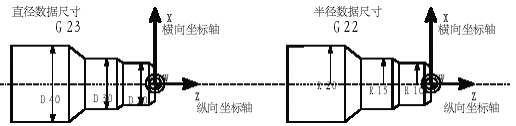
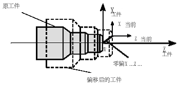
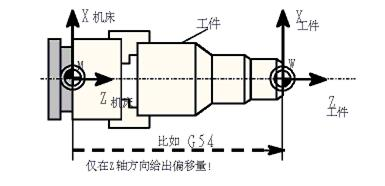

| 坐标系 |
绝对和相对坐标 G90/G91 |
1. 功能
G90和G91指令分别对应着绝对坐标和相对坐标。G90/G91适用于所有坐标轴。
在位置不同于G90/G91的设置时，可以在程序段中通过AC/IC以绝对坐标/相对坐标方式进行。
这两个指令不决定到达终点位置的轨迹，轨迹由G功能组中的其它G功能指令决定。
2. 编程
G90 绝对坐标
G91 相对坐标
X=AC（…）X轴以绝对坐标编程
X=IC（…）X轴以相对坐标编程
绝对坐标 G90:
在绝对坐标中数值取决于当前坐标系(工件坐标系或机床坐标系) 的零点位置。程序启动后G90适用于所有坐标轴，并且一直有效，直到在后面的程序段中由G91 (相对坐标) 替代为止(模态有效)。
相对坐标 G91:
在相对坐标中, 数值表示待运行的轴位移。移动的方向G91由符号决定。
G91适用于所有坐标轴，并且可以在后面的程序段中由G90 (绝对坐标) 替换。 用AC =（…），=（…） 赋值时必须要有一个等于符号。数值要写在圆括号内，定义圆心坐标也可以以绝对坐标AC =（…）定义。
3. G90和G91编程举例
N10 G90 X20 Z90 ；绝对坐标
N20 X75 Z-32 ；仍然是绝对坐标
…
N180 G91 X40 Z20 ；转换为相对坐标
N190 X-12 Z17 ；仍然是相对坐标
半径/直径数据尺寸 G22/G23 |
1. 功能
车床中加工零件时通常把X轴（横向坐标轴）的位置数据作为直径数据编程，控制器把所输入的数值设定为直径尺寸，这仅限于X轴。程序中在需要时也可以转换为半径尺寸。
2. 编程
G22 半径数据尺寸
G23 直径数据尺寸

说明: 用G22或G23指令把X轴方向的终点坐标作为半径数据尺寸或直径数据尺处理。显示工件坐标系中相应的实际值。
3. 编程举例
N10 G23 X44 Z30 ；X轴直径数据方式
N20 X48 Z25 ；G23继续生效
N30 Z10
…
N110 G22 X22 Z30 ；X轴开始转换为半径数据方式
N120 X24 Z25
N130 Z10
…
可编程的零点偏置 G158 |
1. 功能
如果工件上在不同的位置有重复出现的形状或结构；或者选用了一个新的参考点，在这种情况下就需要使用可编程零点偏置。由此就产生一个当前工件坐标系，新输入的尺寸均是在该坐标系中的数据尺寸。可以在所有坐标轴中进行零点偏移。
G158指令要求一个独立的程序段。

工件装夹-可设定的零点偏置: G54～G57/G500/G53 |
1. 功能
可设定的零点偏置给出工件零点在机床坐标系中的位置(工件零点以机床零点为基准偏移)。当工件装夹到机床上后求出偏移量，并通过操作面板输入到规定的数据区。程序可以通过选择相应的G功能G54～G57激活此值。
2. 编程
G54 第一可设定零点偏置
G55 第二可设定零点偏置
G56 第三可设定零点偏置
G57 第四可设定零点偏置
G500 取消可设定零点偏置---模态有效
G53 取消可设定零点偏置---程序段方式有效，可编程的零点偏置也一起取消。

3. 编程举例
N10 G54… ；调用第一可设定零点偏置
N20 X…Z… ；加工工件
N90 G500 G0 X… ；取消可设定零点偏置